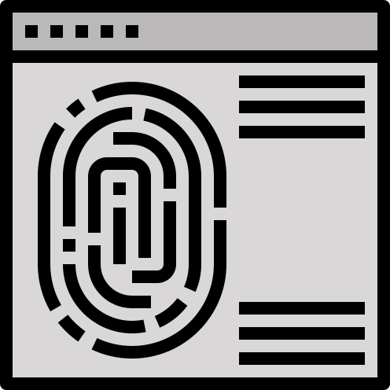

Tout en mémoire

Suite à la commande, un compte sera généré sur l’application.
Toutes les informations personnelles seront à saisir afin qu’elles
soient enregistrées dans la base de données.
Détection du
rythme cardiaque
Des études à l’appuie ont démontré que le Safe Patch +, était capable
de détecter différents troubles du rythme cardiaque. Un réseau de
neurones artificiels a été connecté via un algorithme pour permettre
d’établir une distinction claire entre différents types de troubles
cardiaques spécifiques. (arythmie cardiaque , fibrillation auriculaire
, bradycardie)
Détection du rythme cardiaque

À la réception du patch, la personne devra faire des analyses
sanguines afin de stocker l’adn de la personne pour favoriser la
reconnaissance à l’application du patch. La reconnaissance de l’adn se
fait via la sueur prélevée via un capteur.
Détection de chute

Le Safe patch + , réagit en cas d'arrêt soudain, ou de chute grâce â
un accéléromètre. Dans ce cas le patch se met en alerte, peut être
arrêté par le bouton stop ou alors les secours seront alertés.
Bouton Stop
Un bouton stop est disponible dans le cas où l’alerte est déclenchée
de manière involontaire ou que la personnne n’est pas en danger. Une
simple pression sur celui-ci suffit a stopper le processus d’alerte.
Ce bouton sert aussi de bouton on/off.
Géo localisable
En cas d’accident, les secours seront prévenus automatiquement et
votre dernière position géolocalisée leur sera communiquée grâce à la
puce GPS du Safe patch + afin de permettre une intervention rapide.
Enceinte et micro
Safe patch + est équipé d’une enceinte de très haute qualité et d’une
puissance de 20W. Il est doté également d’un micro discret doté d’une
technologie de réduction active de bruit qui permet de filtrer les
bruits indésirables autour de la victime.
Rechargeable

Safe Patch + est doté d’une petite batterie lithium‑ion. Rechargeable
via un chargeur Qi10 (chargeur induction). Ce chargeur se trouve sur
le dock dans la boîte du patch. Jusqu'à 100% de charge en 15 minutes.
Jusqu'à 48 heures d’autonomie pour une seule charge.
Matériaux utilisés
Le Safe Patch + est composé de plastique recyclé ainsi que de
caoutchouc naturel cis-1,4-polyisoprène (NR). Ces deux composants ont
pour indice de protection IP65 et IP66 : ils sont totalement protégés
contre les poussières, ainsi que les jets d’eau de toutes directions
(buse de 6,3mm, distance 2,5m à 3m, débit 12,5L/min ±5%).